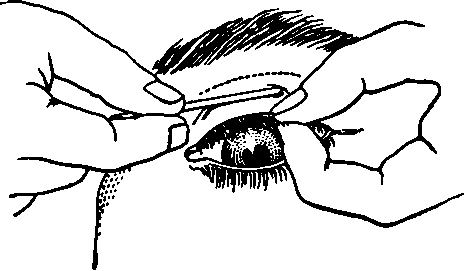

Organs For Receiving Knowledge. Part 3
Description
This section is from the book "The Human Body And Health", by Alvin Davison. Also available from Amazon: The Human Body and Health.
Organs For Receiving Knowledge. Part 3
Why Some Persons Cannot See Clearly
Very few grown persons have perfect sight, and many children cannot see distinctly objects unless they are held very near to the eye. Pupils who must hold this book nearer than 16 inches to the eye to read easily, without eye strain, are nearsighted. Those who must hold the book nearly two feet from the eyes when reading are farsighted.
Nearsightedness is usually due to the fact that the eye is too long from before backward. Farsightedness is caused by the eye being too short from before backward.
The Use Of Glasses
Many persons after reading or studying an hour have headache, and tears gather in the eyes because they have been strained to see clearly. The muscle controlling the shape of the crystalline lens was worked hard to bring the rays of light to a focus on the retina. Such a difficulty can be remedied by wearing glasses.
When the glasses suit the eyes properly, one can read without headache or eye strain. Nearsightedness is remedied by using concave glasses, that is, glasses with both surfaces curving inward toward each other. Farsightedness is aided by convex glasses which have the surfaces curving outward.
How Children Injure Their Eyes
Examination shows that at six years of age four fifths of the pupils have perfect sight, and only four out of a hundred have very bad eyes. At eight years of age three fourths of the pupils have perfect eyes and eight out of a hundred have very imperfect eyes. At eleven years of age only about two thirds of the pupils have perfect eyes. This shows that most children begin life with good eyes, but hurt them by improper use.
Many children weaken their eyes by reading in a dim light, reading in bed, or with the head hanging over the book so that there is pressure on the sides of the eyeball. Studying books or maps with fine print is injurious to the eyes. Smoking much tobacco sometimes makes the eyes weak.
Fig. 130. How the eyes are injured.
Fig. 131. Proper position at the table to prevent eyestrain.
How To Keep The Eyes Strong
The book should never be held nearer to the eyes than one foot, and the reading of print finer than that in this book should be avoided by young children. Keep the head erect when studying, and hold the book up. If the eyes ache or smart, stop using them for several hours. Never read in a dim light.
When recovering from measles, chicken pox and other diseases, the eyes should not be used in reading or sewing, and should be shielded from a strong light. In seeking help for weak eyes consult a reliable oculist, and give no heed to the large advertisements by eye specialists offering to furnish glasses cheap. Poor glasses may ruin the eyes.
Fig. 132. How a match stick may be used to turn up an injured lid for examination.
Common Injuries To The Eye
Cinders and other bits of dirt often get beneath the eyelid. Do not rub the eye. Holding the opposite eye shut and blowing the nose vigorously a few times, will often remove the dirt. By looking down, another person may seize the edge of the upper lid and turn it backward over a rounded match stick. The dirt can then be removed with the corner of a clean handkerchief. The lower lid may be merely drawn down to clean off the surface.
Sore Eyes
When the eyes are red or inflamed from any cause, some relief may be had by bathing them several times daily with a solution of boracic acid. This is made by dissolving in a teacupful of water as much boracic acid as will lie on a silver half-dollar.
Sore eyes are usually much relieved by being washed out with the boracic acid solution, because this tends to keep from growing the germs which cause the trouble. Care should be taken that the germs in the sore eyes do not get on pencils, towels or handkerchiefs used by other persons, and thus make their eyes sick.
Cataract is a growth in the crystalline lens making it opaque. It can be cured only by an operation by a surgeon.
How Narcotics Affect The Sense Organs
Much chewing and smoking tends to lessen the sense of taste. Smoking may also decrease the sense of smell by irritating the delicate end organs in the nose. Smoking prepares the way for catarrh in the young. This may affect not only the sense of smell, but also that of hearing, by extending up the tube leading to the middle ear.
Frequent smoking in the young has been known to affect the sight seriously. Doctor Alfred Woodhull of the United States Army, says: "Tobacco is liable to render vision weak and uncertain, causing objects to appear nebulous, or it creates the sensation of floating spots." One well known eye specialist alone reports 35 cases of injured vision produced by the continual irritation of the optic nerve by tobacco.
Doctor McSherry says when sight fails in smokers and no change in structure can be seen, tobacco poisoning may be assumed. Candidates for the United States Naval Academy, rejected on account of poor eyesight, have in most cases admitted using tobacco while young.
The period of life before twenty is the time when the sense organs are most markedly affected by the use of tobacco and alcoholic drinks. Even later in life narcotics may do lasting injury to the senses. The use of much liquor produces bloodshot eyes, because the walls of the arteries are relaxed, and so become enlarged.
Long use of intoxicants has been known to do permanent injury to the optic nerve. This was probably due to the paralyzing effect of the alcohol on the nerves controlling the blood vessels leading to the eye.
Practical Questions
1. What are the sense organs? 2. Explain how we get acquainted with the nature of an apple. 3. Name eight senses. 4. Name three sense organs in the skin. 5. Of what use is the sense of smell? 6. Describe the sense of taste. 7. Name the three parts of the ear. 8. Describe the outer ear. 9. State three facts about the middle ear. 10. Describe the inner ear. 11. Explain how we hear. 12. How may insects be removed from the outer ear? 13. What causes ear ache? 14. What may cause deafness? 15. Can you hear a watch tick six feet distant with either ear closed? 16. What nerves lead from the eye to the brain? 17. Describe the tear gland. 18. Name the parts of the eyeball. 19. Give the contents of the eyeball. 20. Explain how light is brought to a focus. 21. What causes near sight and far sight? 22. How do glasses help one see? 23. Describe how children often injure their eyes. 24. Explain how to keep the eyes strong. 25. What care should be given sore eyes? 26. How does tobacco affect the sense organs?
Continue to:
- prev: Organs For Receiving Knowledge. Part 2
- Table of Contents
- next: Chapter XIX. The Cause Of Sickness